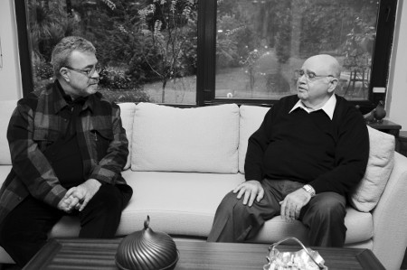

“Altı yaşında mutfağa girdim”
Sayın Develi yemekle aranız nasıl?
Hem yemek yapmayı severim, hem yemek yemeyi severim. Kimileri yaşamak için yer, kimileri yemek için yaşar. Ben yemek yemek için yaşayanlardanım. Ama doktorum bu durumdan çok memnun değil; benden şikâyetçi. Gençliğimizde gece gündüz demeden hep çalıştık. Şimdi hayatın keyfini sürme zamanı, ama bu sefer de sağlığımız buna izin vermiyor.
Annenizin mutfağını hatırlıyor musunuz? Size neler pişirirdi?
Hiçbir zaman unutmadım. Annem bize güneydoğunun ve Gaziantep’in tüm yöresel yemeklerini yapardı. Kalaylı bakır tencerelerde ve maltız denilen kömür mangallarında pişen yemeklerin tadı hâlâ damağımdadır. Akşamları restoranımızda yemeğimizi yerdik, onun üstüne eve gidince bir de annemizin sofrasına otururduk. Karnımız ne kadar tok olursa olsun annemin yemeklerine dayanamazdım. Annem, yemeklerin lezzeti kadar sunumuna da önem verirdi.
Bildiğim kadar çocukluğunuz mutfaklarda geçti. O günlerden aklınızda kalan anılar neler?
Ben altı yaşında mutfağa girdim. Şimdi düşününce torunumun yaşında mutfakla tanışmışım. Altı yaşındaki torunuma keyifli bir hayat sunmaya çalışıyoruz. Anaokulu, bale dersi, piyano dersi... Ben ise aynı yaşta mutfakta boynumda tepsi taşıyordum. O zamanlar büyük bir disiplin söz konusuydu. Hataya asla müsaade edilmezdi. Hata yapma lüksümüz yoktu. En ufak hatamızda tokat ensemizde patlardı. O günün şartları öyleydi. Şimdi ustalarımızı rahmetle anıyorum. O disiplin bana hep ışık tuttu. Tabii ki günümüzde bu sert koşulların uygulanması taraftarı değilim. Fakat gençlerimiz de disiplini elden bırakmamalılar. Disiplin, yalnız iş hayatında değil yaşamımızın her alanında olmalı.
Ailenizde erkekler de mutfaktan yetişmiş. Babanız da evde mutfağa girer miydi?
Ben babamı iki yaşındayken kaybettim. Gaziantep kültüründe o dönemlerde evde erkek mutfağa girmezdi. Şimdi her şey değişti. Artık oğlum kız arkadaşına yemek hazırlıyor.
Çocukken en sevdiğiniz yemekler hangisiydi?
En sevdiğim yemekleri saymaya kalkarsam sayfalar yetmez. Güzel ve hakkıyla yapılan her yemeği severim. Ama çocukken Antep’teki bayram sabahlarını unutmam mümkün değil. Tüm evlerde tek tip bir mönü çıkardı. Yuvalama ve üstüne zerde sütlaç yenirdi. En zenginin evinde de en fakirin evinde de aynı yemek bulunurdu. O dönemde sofraların lezzeti kadar öne çıkan nokta insanların sofralarını birbirlerine açmalarıydı. Çocukken annem bize ekşili taraklık, kazan kebabı yapardı. Bu yemekleri bir an evvel yiyebilmek için o günlerde eve koşarak giderdim.
Siz de mutfağa girip yemek yapıyor musunuz?
Ben işyerimin mutfağında yıllarca çalıştım... Ev hayatımızda eşim mutfağa çok düşkün olduğundan, evde üretim değil tüketim kısmında faaliyet gösteriyorum. Eşim o kadar enfes yemekler yapıyor ki, bir gün eve yemeğe davet ettiğim doktorum yemekten sonra, “Arif Bey size hak verdim. Bu kadar güzel yemeklerin arasında sizden kilo vermenizi istemek haksızlık” dedi. Eşimin yemeklerinin lezzeti kadar sunumu da çok özeldir. Her akşam kendimi çok özel hissediyorum. Sofralar paylaştıkça keyiflenir; Allah’a şükür, misafirimiz de eksik olmuyor.
Eşinizin yaptığı en lezzetli yemekleri sıralar mısınız?
Bunu sıralamam çok zor, çünkü tüm yemekleri çok güzel yapar. Kendisi evine ve ailesine âşık biri. Bu yüzden tüm yemeklere sevgisini katıyor. Evde hangi mutfağı ararsanız var. Yöresel mutfaktan Fransız ve Uzakdoğu mutfağına kadar her şey var. En son suşi ve çikolata eğitimi aldı. Sonra gel de kilo ver. İşim çok zor, çok...
Kebaptan başka yemeklerle aranız iyi mi?
Gaziantep dendiğinde akla ilk kebap gelse de, Gaziantep mutfağı kebap kadar lezzetli tencere yemekleriyle de meşhurdur. Birçok sebze ve meyvenin kullanıldığı sulu tencere yemeklerine doyum olmaz. Aynı zamanda ailece balığı da soframızdan eksik etmeyiz.
Ünlü fıstıklı kebabınızı nasıl keşfettiniz?
Yurtdışından gelen yabancı bir işadamı grubu vardı. Gelmeden önce beni arayıp değişik lezzetleri tatmak istediklerini söylediler. Hemen kolları sıvayıp mutfağa girdim. Onlara unutamayacakları farklı bir şeyler sunmak istiyordum. Bir denemeyle başladı her şey. Yaptığım fıstıklı kebap o gün herkesin çok hoşuna gitti. Ama en önemlisi benim de çok hoşuma gitmişti. Sunduğunuz bir şeyi önce siz beğenmelisiniz. O gün konuklardan ve benden geçer not alan kebabı neden mönümüze koymayalım dedik. İyi ki de öyle yapmışız.
Yemek seçer misiniz?
Tavuktan başka her şey yerim. Şimdi soracaksınız niçin diye. Cevabını tam olarak bilmiyorum, ama herhalde çocukluktan gelen bir alışkanlık. Bu mahlukla aramız bir türlü düzelmedi. Doktorum “Tavuk ye” diyor, ama bu konuda anlaşamıyoruz.
Etten sonra neyi yemeyi çok seversiniz?
Balık. Ailece balığa çok düşkünüz. Özellikle ülkemizin üç tarafı denizlerle çevrili olduğu ve balık çeşitliliği açısından zengin olduğu için çok şanslıyız. Bu yüzden hayatımızda balığa yer veriyoruz. Gerek evimizde gerek akşam dışarı çıktığımızda tahmininizin aksine balık tercih ediyoruz.
Antep yemeklerinden en çok hangisini seversiniz?
Bütün kebapları çok severim. Bunun yanı sıra tüm Antep yemeklerine bayılırım. Eğer illaki isim istiyorsanız size alaca çorba, ekşili köfte ve yuvalama diyebilirim.
Yemeklerinizi evde mi yoksa restoranda mı yersiniz?
Akşam yemeklerini genellikle evde yeriz. Haftanın belli günleri çoluk çocuk hep birlikte dışarıda akşam yemeği yeriz. İş hayatım kadar aile hayatıma da önem veririm. Öğlenleri ise işyerimde personelim ne yiyorsa onu yerim. Personelimize çıkan yemeğe de çok önem veririm.
İşten tamamen elinizi eteğinizi çektiniz mi?
Yılların vermiş olduğu bir tutku bu; dile kolay, altı yaşından beri çalışıyorum. Onun için işten tamamen kopmak öyle kolay olmuyor. Yönetim kurulu başkanlığına devam ediyorum. Ama oğlum Ali ve Nuri Develi artık işin başında. Onlar dümende artık, ben de teknenin seyir defterini kontrol ediyorum diyebiliriz. Bizim kuşak için işten kopmak hayattan kopmaktır.
Ocağın başını özlüyor musunuz?
O zevkimi, evde pazar günleri dostlarıma mangal partisi yaparak tatmin ediyorum. Pazar günlerimi dostlarımla beraber geçiririm. Özellikle yazın evimizin bahçesinde çok keyifli geçiyor bu davetler. Evimizin mutfağına bir kebap ocağı yaptırdım. Bir pazar günü sizi de ağırlamak isterim.
Yaklaşık bir asırdan beri aileniz bu işin içinde. Kalitenizi nasıl koruyorsunuz?
Marka olmak kadar markayı korumak ve sürdürmek de önemli. Biz firma olarak misafir ve personel odaklıyız. Öncelikle personel konusunda çok hassas bir firmayız. Personelimize çok önem veriyoruz, onların bu markanın aynası olduğunu düşünüyoruz. Misafirlerimize hep dürüstüz. Bir marka söz konusu ve bu markadan bekleneni onlara en iyi şekilde sunuyoruz. Aile şirketlerinde kurumsal yapı ve uyum çok önemlidir. Beni en çok mutlu eden, oğullarım Ali Develi ile Nuri Develi’nin birlik ve beraberliklerini korumasıdır. Evet, çok köklü bir firmayız. Biz bu asırlık markanın onurunu, gururunu taşıdığımız kadar, sorumluluğunu da taşıyoruz. Develi bir aile firması ve bu aile o kadar büyük ki, tüm konuklarımız bu ailenin bir parçası. Yıllar önce babasının kucağında gelenler, yıllar sonra bu kapıdan çocuklarıyla giriyorlar. İşte başarımızın sırrı burada saklı. Biz bu mesleğe gönül verdik.
Lezzetli bir kebap yapmak için gerekli olan nedir?
İşin sırrı iyi malzemeyi, iyi ustayla, uygun şartlarda ve koşullarda birleştirmekte yatıyor. Etin cinsinin çok iyi olması gerekir. Lezzetli bir kebap için, kebapta kullanılan yağ oranı da çok önemlidir. Önemli bir detay da kıymanın bıçakla kıyılmış olmasıdır. Ürün kalitesiyle, ustalarımız ve gıda mühendislerimiz kadar bizler de ilgileniyoruz. Alım departmanı olmasına rağmen tüm ürünlerin alım kısmında ben ve çocuklarım mutlaka oluruz.
Restoranlarınızın dışında yemek için başka yerlere de gider misiniz?
Kendi restoranlarım dışında birçok restoranda da akşam yemeği yerim. Bu şekilde sektörümde ne olup bittiğini takip ederim. Öğrenmenin ve gelişmenin sonu yok. Gözünüzü kapamayacaksınız. En iyiden de en kötüden de çıkaracak sonuçlar vardır bu hayatta. Ben dünyanın birçok yerinde farklı lezzetler tattım. Bana göre bizim mutfağımız, en lezzetli olanı. Uzakdoğu mutfağını seviyorum, özellikle Dragon Restoran bu mutfağı başarıyla sunuyor. Bir de Paris’te, Hotel Costes’in restoranında yediğim et aklımda kaldı. Bir yemeği keyifli kılan, lezzeti kadar sunumudur. Artık insanlar, lezzetle beraber atmosfer de arıyor.
Antepliye sorulmaz ama tatlıyla aranız nasıl?
Tatlı olmazsa olmaz. Tatlı yiyelim tatlı konuşalım felsefesiyle yaşadık hayatımızı, öyle yaşamaya da devam ediyoruz. Ama artık sağlık izin vermiyor. Dediğim gibi, kolesterol ve şeker aldı başını gidiyor; yolda kalmayalım diye sevdiklerimizle yolumuzu yavaş yavaş ayırıyoruz.
Sakatatla aranız nasıl?
Benim sakatatla aram iyi, ama doktorumun benle arası iyi değil. Uykuluk ve ciğer kebabını çok severim. Bunlara “hayır” diyemem. Hele sabah ciğer yemeye doyum olmaz. Doktoruma çaktırmadan arada bir kaçamak yapıyorum. Ama ölçüyü kaçırmıyorum.
Etin pahalı olması sizin fiyatlara da yansıyor mu? Müşteri şikâyet ediyor mu?
Et, bizim hammaddemiz. Et fiyatları kanayan yaramız. Her geçen gün et fiyatlarına zam geliyor, ama bunu misafirlerimize yansıtmamaya çalışıyoruz. Bu duruma ne kadar daha dayanırız bilemiyorum.
Antep dışında yemeğini sevdiğiniz yöreler var mı?
Ülkemiz kültürel açıdan çok zengin. Her yörenin farklı lezzetleri var. Bizim kadınımız çok değerli. Savaşlarda, yokluk zamanında evde ne varsa tencereye koymuş, sevgisini emeğini de eklemiş, farklı lezzetler çıkmış ortaya. Antep mutfağı dışında Konya mutfağını da çok severim.

Kebap yemek isteyenlere nelere dikkat etmelerini önerirsiniz?
Günümüzde kebapçılık oldukça göz önünde. Kebap yemek isteyenlere, gerçek anlamda işini temiz yapan ve işinin hakkını veren firmaları tercih etmelerini öneririm. Gıda işi hijyen işi demektir. Özellikle etle meşgul olan firmalarda bu konu daha da önemlidir.
Büyümeyi, şubeleşmeyi sürdürecek misiniz? Hedefinizde neler var?
Altı yaşından beri çalışıyorum. 1966 yılında markamı İstanbul’a taşıdım. Şu an beş şubemiz ve 500’ün üstünde çalışanımızla köklü bir firmayız. Bundan sonra dümen oğlum Ali ve Nuri Develi’de. Markanın imajını ve kalitesini korumak şartıyla yeni yatırımlar yapacaklarını düşünüyorum. Yapmalarını da arzuluyorum. Yeni yatırımlar istihdam yaratır. İkisi de bu işin içinde yetiştiler. Gençliğinizi ve bilginizi yalnız kendiniz için değil insanlık için de kullanmalısınız, üretmelisiniz. Kaliteden taviz vermeden yatırım yapmalısınız ki insanlara umut olun. Aynı zamanda vizyon sahibi kişiler. Mutlaka yenilikler getireceklerdir. Onlara güveniyorum. Bana ihtiyaç duydukları her noktada onlara tecrübelerimi sunuyorum ve ışık tutmaya çalışıyorum.
İlginç mutfak anılarınız varsa aktarabilir misiniz?
“İkinci Bahar” dizisi çekildiği dönemde, Şener Şen mutfakta bir süre çalıştı. Önemli olan mesleğiniz ne olursa olsun hakkını vermek ve büyük bir disiplinle sürdürmek. Evet, bugün Şener Şen ülkemizin en büyük sanatçılarından biri. Böyle olmak kolay mı dersiniz. Şener Sen sırf “İkinci Bahar” dizisindeki rolü için büyük bir disiplinle mutfağımızda çalıştı. Bizlerle beraber personel yemeği yedi, o mutfağın kokusunu teneffüs etti. İşte başarı böyle geliyor.
(31 Ekim 2010)